LABSIS
2020/2021
Alunos:
Tiago Machado 1171126
1171126@isep.ipp.pt
Diogo Freitas 1180919
1180919@isep.ipp.pt
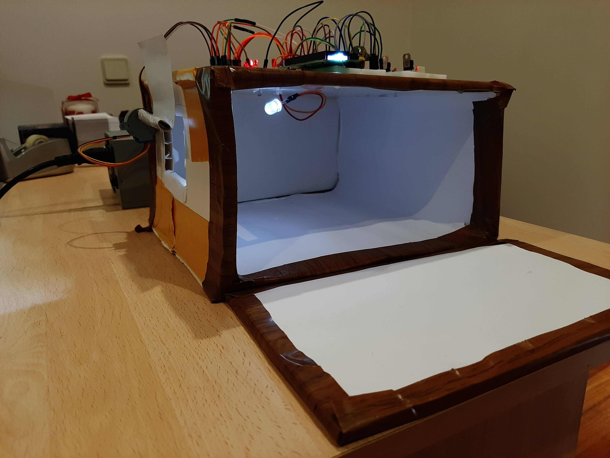
Foi-nos proposto o seguinte projeto no âmbito da unidade curricular de LABSI – Laboratório de Sistemas da LEEC – Licenciatura em Engenharia Eletrotécnica e de Computadores, no qual abordamos a implementação prática de um sistema de controlo de luzes e estores elétricos através de um microcontrolador, um motor passa-a-passo e linguagem C.
Este tipo de projeto ajuda-nos a perceber quais são os princípios básicos de criação e funcionamento de sistemas complexos e de grande alcance que já são usados no dia-a-dia. O controlo de luz está cada vez mais presente nos nossos dias e ainda estará mais no futuro devido a tecnologia que está a ser desenvolvida através do (IoT). Apesar de ter um princípio de funcionamento bastante simples, influencia de uma forma totalmente positiva a vida de milhões de pessoas, tanto em termos de saúde, ecologicamente e financeiramente.
Estado de Arte
Em termos práticos conseguimos observar aplicações práticas deste tipo de uso em em casas inteligentes em que a casa é completamente autónoma, ou seja, é controlada digitalmente em termos de componentes internos como "Luzes", "Estores", aparelhos digitais e muitos outros, e através desse controlo digital, consegue-se reduzir consumos de energia de zonas menos ativas para zonas mais ativas e assim reduzir os custos financeiros.
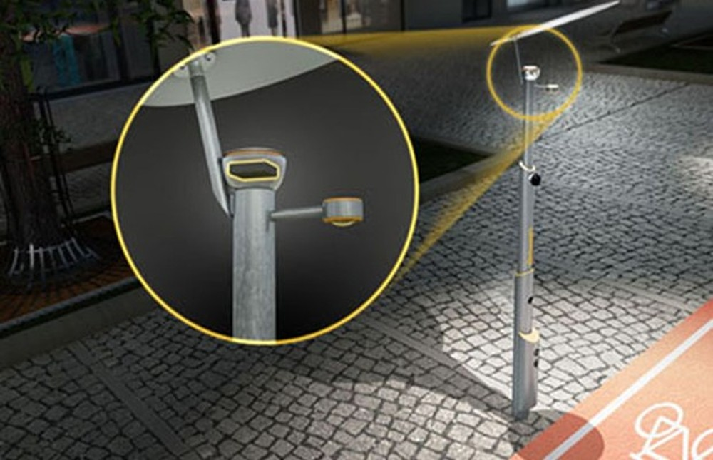
Figura 2 - Poste de iluminação inteligente[2]
Figura 3- Faróis inteligentes de um carro[3]
Existem também vários vídeos que representam, de forma simplificada, algumas partes do trabalho abordado nesta página, como por exemplo:
1. Led Control with LDR and arduino – Mert Tech
De forma a simplificar a intrepretação do projeto, podemos representa-lo através de um diagrama de blocos, como ilustra a figura 4 e assim compreender melhor o funcionamento do sistema:
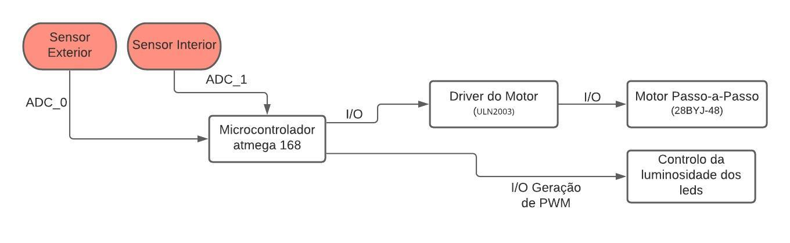
Desta forma, podemos observar que o sistema começa com a recolha de dados analógicos pelos sensores LDR, analisando a luz do ambiente externo e do ambiente interno. Após essa recolha, os dados são processados pelo microcontrolador Atmega 168 que automatizará o processo de abrir ou fechar estores (motor passo-a-passo) por método de ligação I/O e controlar a luminosidade do interior através de um sinal PWM.
Microcontrolador

O principal componente usado neste trabalho foi o Atmega 168 (figura 5) que nos permitiu automatizar todos os processo. Este atmega é um microchip de alto rendimento e baixo consumo. É composto por uma memória flash ISP de 16 kB com capacidade de leitura e escrita ao mesmo tempo, 512B EEPROM, 1KB SRAM, 23 pinos I/O separados por 3 ports (B,C,D), 32 registos, 3 timers flexíveis com comparadores, interrupções externas e internas, USART, comunicação 2-wire serial interface orientada ao Bit, SPI serial port, 6 canais de conversão A/D 10-Bit. A tensão de operação varia entre os 1.8 e os 5.5V [5]. Este atmega serviu para todas as nossas necessidades e foi configurado com uma frequência de clock de 1MHZ. Datasheet
Sensores - LDR

A parte fundamental para realização do nosso projeto é o controlo de luminosidade tanto interior como exterior e dessa forma escolhemos dois sensores de luz, tal como
refere a imagem 6, dois LDR. Um sensor estaria a fazer requisição de dados da parte exterior da casa e o segundo da parte interior. Os ldrs são sensores resistivos, ou seja, a sua resistência varia
conforme a luminosidade e desta forma, o valor da tensão também. Quando está completamente escuro, o valor da sua resistência aproxima-se de 1MOhm e por consequente, de 0V. O mesmo acontence de forma reversa,
quando está muita luz, a sua resistência é muito baixa e o valor da tensão aproxima-se dos 5V. Datasheet
Motores: Driver e Stepper-Motor Driver - ULN2003A

Como usamos um motor no nosso projeto, que precisa de uma corrente mais elevada para funcionar de forma correcta, necessitavamos de um driver de alta tenão e de alta corrente, capaz de controlar a corrente e a tensão que passa para o motor. O chip do ULN2003 contém 7 drivers de transístores que permitem o acionamento de cargas indutivas, como podemos observar na figura 8. Em todas as saídas, os transístores encontram-se com o coletor aberto e díodos de supressão que aguentam correntes até 500mA e tensões até 50V [6]. Desta forma, ligamos 4 pinos necessários do motor, do microcontrolador ao driver, ou seja, aos INPUT(1,2,3,4) da figura 7, o VCC aos 5V e o GND á massa. Datasheet
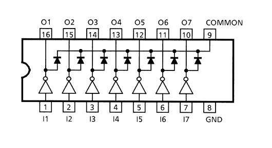
Stepper Motor - 28byj-48
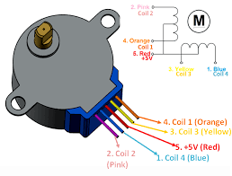
Para simular o estore de uma casa, recorremos ao motor passo-a-passo, porque desta forma seria mais simples controlar a abertura ou fecho do estore, ou seja, o número de rotações necessárias. O motor 28byj-48 respondia a todas as nossas necessidades, sendo simples a sua forma de controlo. Este motor precisa de 2048 passos para conseguir dar uma volta completa, o que nos leva a um ângulo de fase de (360/2048) = 0.176 graus [6]. Tendo esta forma de funcionamento permite de uma forma mais simples de contar o número de passos para abrir e fechar o estore. Este motor é unipolar e constituido por 4 fases que são ativadas de forma consecutiva pelo microcontrolador. A corrente necessária é de 0.1mA para funcionar de forma correta, isto porque têm uma resistência interna de 50 Ohms, logo o driver de controlo referido em cima adapta-se de forma perfeita para esta situação. Datasheet
Display - LCD 16X2

Utilizou-se um display 16x2 com a comunicação a 4bits [7]. Colocar display em funcionamento foi prioridade com o intuito de visualizar dados no ecrã e ser possível comprovar o bom funcionamento dos módulos seguintes e analisar se os valores lidos pelos sensores estavam correctos. Datasheet
Regulador de Tensão - LM7805

Foi utilizado um regulador de tensão inserido no circuito estudado nas aulas teóricas com o intuito de conseguir transformar a tensão de entrada, que geralmente é superior à necessária, numa tensão apropriada para o microcontrolador. Neste caso, transformar 12V fornecidos por uma fonte alimentação de um computador em 5V. Conseguindo, assim, a tensão de 5V para o driver de controlo, a tensão superior para os motores e a alimentação do microcontrolar, ficando assim, o sistema autónomo. Datasheet
Led Branco
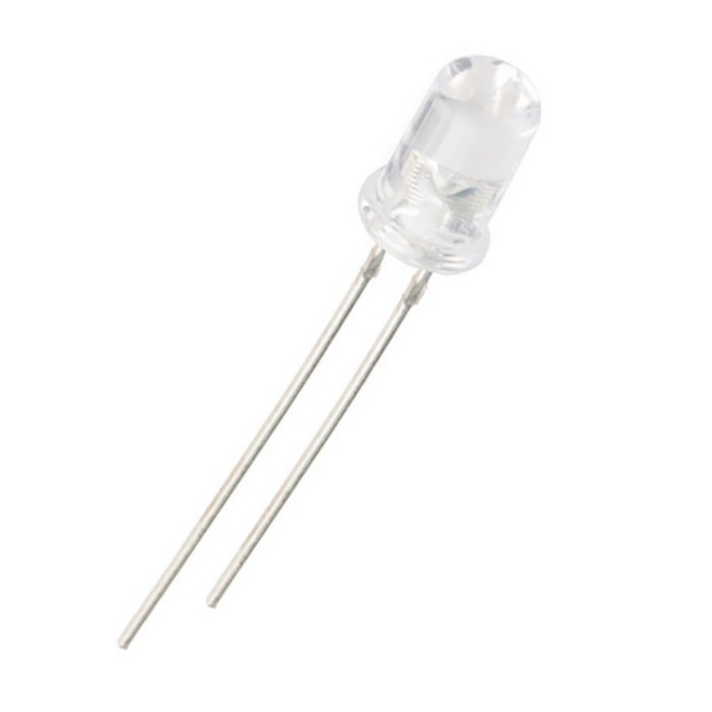
A forma de iluminação que optamos usar foi através de um led branco em que a sua luminosidade será controlada por software.
Esquema Elétrico
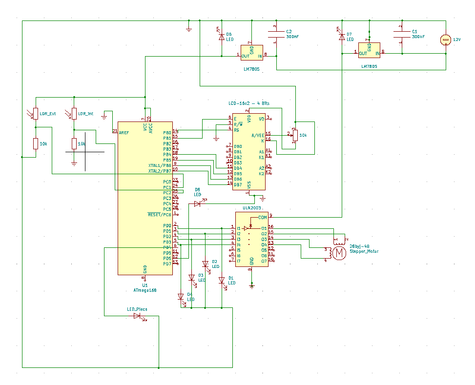
Aqui podemos ver, de uma forma geral, todos os componentes já referidos acime. Temos os dois reguladores de tensão de 5V, em que um regulador está alimentar os dois sensores e o microcontrolador. Depois temos o outro regulador a alimentar somente o driver de controlo e o motor. Optamos por fornecer um regulador inteiro só para o motor, visto que o motor necessita de uma corrente relativamente elevada e isso faz com que o regulador aqueça. Os leds nas quatro entradas do driver de controlo servem para visualizar se o micro está a passar a informação pela ordem correcta ou se existe alguma anomalia.
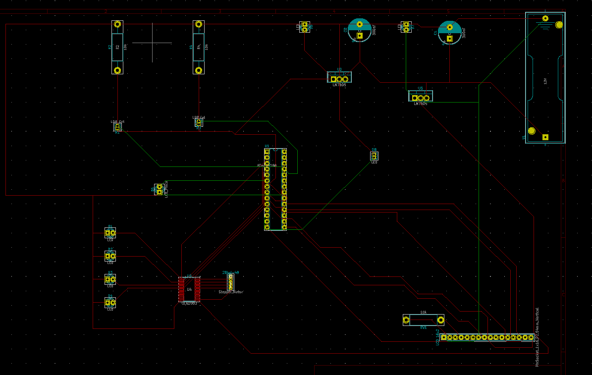
Este esquema PCB contém as ligações aos componentes usados no projeto , desde o microprocessador Atmega168 até ao Stepper Motor. Porém, temos 4 sockets ( os 2 ldrs, o LCD e led da luz interior ) e 1 pin header ( Stepper Motor ) na placa, a representar alguns componentes, pois o respetivo componente não poderia ficar preso na placa PCB.
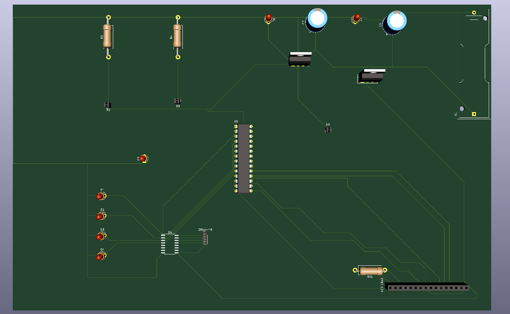
Fluxogramas
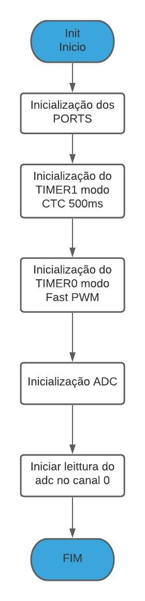
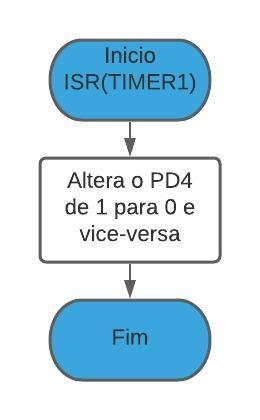


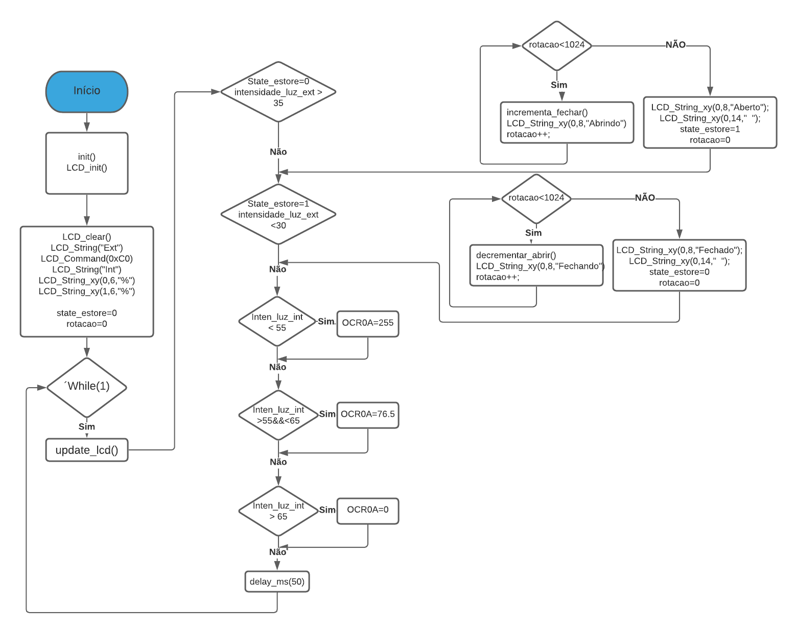
Descrição das funções
Função Init():
Nesta função é onde é feita todas as inicializações, quer dos ports, timers e adc:
Ports: Utilizamos o PORTB para o controlo do lcd. Logo, ficou todo como saída, apesar de só ter sido utilizado 4 pinos. Do PORTD, usamos 7 pinos, os quatro primeiros bits em saída para o motor (0...4), o bit 4 para fazer piscar um led a um 1Hz e o bit 6 como saída para os leds interior que serão controlados por um sinal PWM.
Timers: Em termos de timers, usamos apenas dois timers, o timer 0 para gerar uma onda PWM e o timer 1 para a marcação de tempo de 500ms.
Timer 0: Definimos o modo do Timer/Counter 0 como fast PWM, e como o toggle só ocorre quando o OC0A coincide com o TCNT0 e este é superior ao OC0A, colocamos o TOP a 0XFF, ou seja, o valor máximo. Não usamos prescaler, pois quanto menor este for, maior vai ser a frequencia do PWM. Como a frequencia do PWM é alta, o LED altera o seu estado com uma velocidade de tal forma alta que a olho nu não se consegue aperceber dessas alterações e o LED aparenta estar sempre ligado. Selecionamos o modo 3 no TCCR0A: logo o bit WGM01 e WGM00 ficam a 1, ainda no TCCR0A, como escolhemos non-inverting e clear on compare mactch, colocamos o bit COM0A1 a 1. NO TCCR0B, como escolhemos não usar prescaler, basta colocar o bit CS00 a 1.
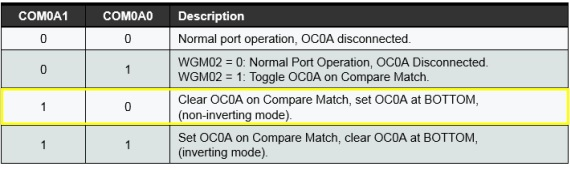
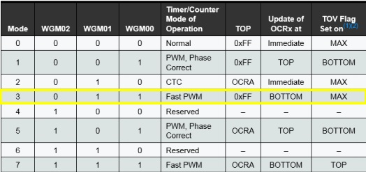
Figura 21 - Escolha do modo non-inverting
Figura 22- Escolho do modo 3 ( Fast PWM )
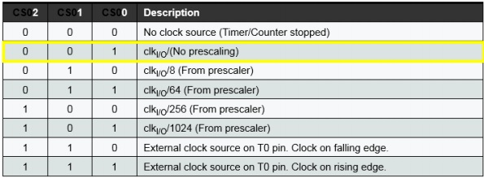
Timer 1: Definimos então o prescaler a 256, e o modo de operação do timer como CTC e atribuímos ao TOP o OCR1A, sendo este o valor de comparação para que a interrupção ocorra, ou seja, quando o TCNT1 atinge o valor do OCR1A é quando ocorre o toggle. Como um dos objetivos deste código é colocar o LED a alternar a uma frequência de 2Hz, conseguimos retirar o valor de OCR!A de 1953 pela expressão -> OCR1A = (F_CPU/freq*256)-1, sendo a frequência de CPU de 1MHz. Este valor é coerente pois o Timer/Counter 1 é de 16 bits, ou seja, o valor de OCR1A poderia ir até 65 356. No registo TIMSK1 só colocamos o bit 1 (OCIE1A) a 1 para permitir que a interrupção ocorra. No registo TCCR1B colocamos os bits WGM12 e CS12 a 1 para indicarmos o modo 4 e prescaler 256.
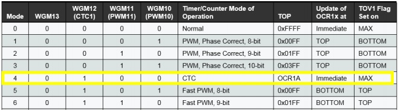
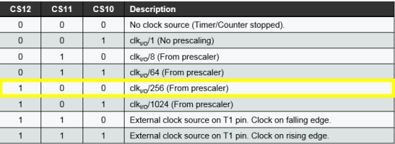
Figura 24 - Escolha do modo CTC
Figura 25- Escolho do prescaler 256
ADC: Como precisamos de um clock frequency entre 50 kHz e 200 kHz, usamos um fator de divisão de 16 que nos dá 62,5 kHz. Os dois sensores estam ligados ao canal 1 e 2 consecutivamente, ajustado a esquerda, ou seja, 8 bits. O registo ADSRA está com o registo ADEN ativo para ativar o A/D, o registo ADIE para ativar a interrupção e o registo ADPS2 para o fator 16.
Interrupções
ISR (Timer 1): Nesta função, colocamos o led no pino D4 a piscar de meio em meio segundo, através da alteração do bit 1 para 0 e vice-versa.
ISR (ADC): Nesta interrupção é onde é feita a leitura dos sensores, como nas configuraçõs do adc está selecionado a esquerda, então neste interrupção necessitamos de ler o ADCH. Neste registo encontra-se o valor (0-255) obtido pelo sensor, em que depois se transformará para um valor percenctual através de uma regra de 3 simples, ainda nesta função selecionamos o segundo canal para conseguir ler o outro sensor.
Função do Motor
Para facilitar a utilazação do motor criamos uma variável com os bits necessários para ativar as bobines e nesta forma, conseguir rodar o motor "const unsigned char step_motor[] = {0b00000011,0b00000110,0b00001100,0b00001001};".
Na função do incrementa_fullstep_fechar(), criamos uma variável auxiliar que vai de 0-3 (números no array acima referido). Desta forma, irá para o PORTD, os valores por ordem da esquerda para a direita do array step_motor assim ele irá rodar para a direita.
Na função do decrementar_fullstep_abrir(), o processo é exatamente igual ao incrementa_fullstep_fechar, contudo temos de iniciar o array step_motor pelo o fim, fazendo assim, o motor andar no sentido inverso.
Função do LCD
A utilização do LCD recorreu-se a um código já existente [7] em que tivemos de adaptar a frequência do oscilador para o 1MHZ e os pinos que utilizamos. O autor forneceu funções que permitiam a fácil utilazação do lcd.
LCD_clear(): tal como o nome indica, esta função permite limpar o ecrã ficando pronto para uma nova impressão
LCD_String_xy(): esta função permite-nos selecionar a posição do cursor onde pretendemos iniciar a escrita. Como é um lcd 16x2, podemos escolher valores entre 0 e 1 como primeiro parâmetro, ou seja, primeira ou segunda linha e o valores entre 0-15 como segundo parâmetro, ou seja, a posição de escrita.
LCD_Char(unsigned char data): Esta função imprime os caracteres recebidos no ecrã. Estes caracteres são enviados pela função LCD_String (char *str) que divide a string em caracteres independentes.
LCD_Update(): Como apenas se recorre a strings para efetuar a impressão, os valores inteiros que queiramos imprimir têm de ser convertidos com recurso à função itoa(), atualizado com os valores atuais dos sensores.
Função da Main
Nesta função, começamos por chamar as funções de inicialização, como a init() e LCD_init(). Após isso, enviamos comandos para configurar o layout do LCD, ou seja, identificar cada sensor que se está a usar e inicializando duas variáveis auxiliares.
Estas variáveis auxiliares servem para controlar os processos nas partes de decisão, o "state_estore" serve para indicar se o estore está aberto ou fechado (1 ou 0), conseguindo assim, evitar que o motor entre em rotação infinita e simulando melhor a altura de abertura e fecho do estore de uma casa comum. A variável rotação vai-nos
ajudar a controlar o número de passos que o motor tem de executar para abrir e fechar.
Após estas inicializações, entramos no ciclo principal do código em que iniciamos por atualizador o lcd com os valores recolhidos nos sensores recorrendo a função "update_lcd". Com esses valores identificados, já conseguimos tomar decisões em que,
se o state_estore for 0 e a intensidade da luz no exterior for maior que 35%, entramo-nos no ciclo de abrir o estore, em que irá aparecer no lcd "abrindo" enquanto a variável rotação é incrementada até ao valor de 1024 (meia volta). Depois irá atualizar o lcd para "aberto", colocar o state_estore a 1 para indicar que está aberto e as rotações a 0 para se conseguir voltar a utilizar.
No caso de fechar o estore, temos de testar se a variável "state_estore" está a 1 e o valor da intensidade da luz exterior menor que 30%. O processo será o mesmo que o de abrir, trocando para "fechando e fechado" no lcd e a variável state_estore returna a 0, para indicar que está fechado.
Para controlar o led no interior da casa, vamos analisar o valor da variável "intensidade_luz_int" que é a que contém o valor do sensor interior. Se for menor que 55%, o valor do 0CR0A será de 255 que corresponde a 100% da capacidade do led, se for maior que 55% e menor que 65%, o valor do OCR0A será de 76.5, que corresponde a 30% da capacidade do led, e por fim, se o valor da intensidade_luz_int for maior que 65%,
o valor do OCR0A será de 0, ou seja, o led será desligado. Executamos um delay de 50ms antes de voltar a repetir o processo todo de novo.
Vídeo de Demonstração
Em suma, podemos afirmar que o projeto global foi um sucesso na medida em que se atingiu o objetivo proposto inicialmente da autonomia da casa. O protótipo atual da casa consegue fazer análise da luminosidade do ambiente e com isso abrir e fechar o estore, ajustando o brilho do led interior conforme as necessidades do ambiente.
Este protótipo pode, no entanto, ser melhorado através de algumas mudanças nomeadamente na estrutura da casa, ou seja, aumentado o tamanho da janela para que desta forma consiga entrar mais luz dentro de casa, para que não seja necessário que o led esteja sempre ligado e também um led com maior luminosidade. Pode-se também melhor os materiais usamos para a construção da casa ficando estéticamente mais atrativa. Finalmente, seria uma mais valia ter sido utilizado um painel fotovoltaico para alimentar a casa,simulando um exemplo de uma casa real mas não foi possível neste projeto devido ao consumo de energia por parte de todos os componentes.
O projeto foi, também, uma oportunidade de desenvolver as capacidades de pesquisa e aplicar os conhecimentos aprendidos ao longo do curso, de maneira autónoma. Concluindo este trabalho foi um êxito não só por ter sido alcançado o objetivo traçado previamente, mas também pela experiência e conhecimento que o acompanharam.
[1] Lago Arquitetura—CASAS INTELIGENTES: FUTURO OU PRESENTE?—https://medium.com/@lagoarquitetura/casas-inteligentes-futuro-ou-presente-878233c63200
[2] Street Lights Smart —Autoesporte—https://autoesporte.globo.com/carros/noticia/2015/10/fabricante-alema-desenvolve-poste-de-luz-inteligente.ghtml
[3] Faróis inteligentes—TEKGENIOUS—https://tekgenius.pt/a-inovacao-automovel-e-cada-vez-mais-inacreditavel/attachment/10/
[4] Diagramas inteligentes—Lucidspark—https://lucid.co/pt
[5] ATmega168—Microchip—https://www.microchip.com/wwwproducts/en/ATMEGA168
[6] Motor de Passo 28BYJ-48 + Driver ULN2003— Eletrogate—https://blog.eletrogate.com/guia-completo-do-motor-de-passo-28byj-48-driver-uln2003/
[7] Interfacing LCD16x2 with AVR ATmega16/ATmega32 in 4-bit mode— ElectronicWings—https://www.electronicwings.com/avr-atmega/interfacing-lcd-16x2-in-4-bit-mode-with-atmega-16-32-